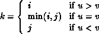
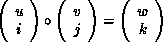
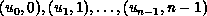

The operator MPI_MINLOC is used to compute a global minimum and also an index attached to the minimum value. MPI_MAXLOC similarly computes a global maximum and index. One application of these is to compute a global minimum (maximum) and the rank of the process containing this value.
The operation that defines MPI_MAXLOC is:

where
and

MPI_MINLOC is defined similarly:

where
and
Both operations are associative and commutative. Note that if MPI_MAXLOC is applied to reduce a sequence of pairs  , then the value returned is (u , r), where and r is the index of the first global maximum in the sequence. Thus, if each process supplies a value and its rank within the group, then a reduce operation with op = MPI_MAXLOC will return the maximum value and the rank of the first process with that value. Similarly, MPI_MINLOC can be used to return a minimum and its index. More generally, MPI_MINLOC computes a lexicographic minimum, where elements are ordered according to the first component of each pair, and ties are resolved according to the second component.
The reduce operation is defined to operate on arguments that consist of a pair: value and index. For both Fortran and C, types are provided to describe the pair. The potentially mixed-type nature of such arguments is a problem in Fortran. The problem is circumvented, for Fortran, by having the MPI-provided type consist of a pair of the same type as value, and coercing the index to this type also. In C, the MPI-provided pair type has distinct types and the index is an int.
In order to use MPI_MINLOC and MPI_MAXLOC in a
reduce operation, one must provide a datatype argument
that represents a pair (value and index). MPI provides seven such
predefined datatypes. The operations MPI_MAXLOC and
MPI_MINLOC can be used with each of the following datatypes.
[ Fortran:]
[ Name] Description
[ MPI_2REAL]pair of REALs
[ MPI_2DOUBLE_PRECISION]pair of DOUBLE PRECISION variables
[ MPI_2INTEGER]pair of INTEGERs
[ C:]
[ Name] Description
[ MPI_FLOAT_INT] float and int
[ MPI_DOUBLE_INT] double and int
[ MPI_LONG_INT] long and int
[ MPI_2INT]pair of int
[ MPI_SHORT_INT] short and int
[ MPI_LONG_DOUBLE_INT] long double and int
The datatype MPI_2REAL is as if defined by the following (see Section Derived datatypes ).
MPI_TYPE_CONTIGUOUS(2, MPI_REAL, MPI_2REAL)Similar statements apply for MPI_2INTEGER, MPI_2DOUBLE_PRECISION, and MPI_2INT.
The datatype MPI_FLOAT_INT is as if defined by the
following sequence of instructions.
type[0] = MPI_FLOAT type[1] = MPI_INT disp[0] = 0 disp[1] = sizeof(float) block[0] = 1 block[1] = 1 MPI_TYPE_STRUCT(2, block, disp, type, MPI_FLOAT_INT)Similar statements apply for MPI_LONG_INT and MPI_DOUBLE_INT.
Example
Each process has an array of 30 doubles, in C. For each of the 30 locations, compute the value and rank of the process containing the largest value.
...
/* each process has an array of 30 double: ain[30]
*/
double ain[30], aout[30];
int ind[30];
struct {
double val;
int rank;
} in[30], out[30];
int i, myrank, root;
MPI_Comm_rank(MPI_COMM_WORLD, &myrank);
for (i=0; i<30; ++i) {
in[i].val = ain[i];
in[i].rank = myrank;
}
MPI_Reduce( in, out, 30, MPI_DOUBLE_INT, MPI_MAXLOC, root, comm );
/* At this point, the answer resides on process root
*/
if (myrank == root) {
/* read ranks out
*/
for (i=0; i<30; ++i) {
aout[i] = out[i].val;
ind[i] = out[i].rank;
}
}
Example
Same example, in Fortran.
...
! each process has an array of 30 double: ain(30)
DOUBLE PRECISION ain(30), aout(30)
INTEGER ind(30);
DOUBLE PRECISION in(2,30), out(2,30)
INTEGER i, myrank, root, ierr;
MPI_COMM_RANK(MPI_COMM_WORLD, myrank);
DO I=1, 30
in(1,i) = ain(i)
in(2,i) = myrank ! myrank is coerced to a double
END DO
MPI_REDUCE( in, out, 30, MPI_2DOUBLE_PRECISION, MPI_MAXLOC, root,
comm, ierr );
! At this point, the answer resides on process root
IF (myrank .EQ. root) THEN
! read ranks out
DO I= 1, 30
aout(i) = out(1,i)
ind(i) = out(2,i) ! rank is coerced back to an integer
END DO
END IF
Example
Each process has a non-empty array of values. Find the minimum global value, the rank of the process that holds it and its index on this process.
#define LEN 1000float val[LEN]; /* local array of values */ int count; /* local number of values */ int myrank, minrank, minindex; float minval;
struct { float value; int index; } in, out;
/* local minloc */ in.value = val[0]; in.index = 0; for (i=1; i < count; i++) if (in.value > val[i]) { in.value = val[i]; in.index = i; }
/* global minloc */ MPI_Comm_rank(MPI_COMM_WORLD, &myrank); in.index = myrank*LEN + in.index; MPI_Reduce( in, out, 1, MPI_FLOAT_INT, MPI_MINLOC, root, comm ); /* At this point, the answer resides on process root */ if (myrank == root) { /* read answer out */ minval = out.value; minrank = out.index / LEN; minindex = out.index % LEN; }
[] Rationale.
The definition of MPI_MINLOC and MPI_MAXLOC given
here has the advantage that it does not require any special-case
handling of these two operations: they are handled like any other
reduce operation. A programmer can provide his or her own definition
of MPI_MAXLOC and MPI_MINLOC, if so desired.
The disadvantage is that values and indices have to be first
interleaved, and that indices and values have to be coerced to the
same type, in Fortran.
( End of rationale.)